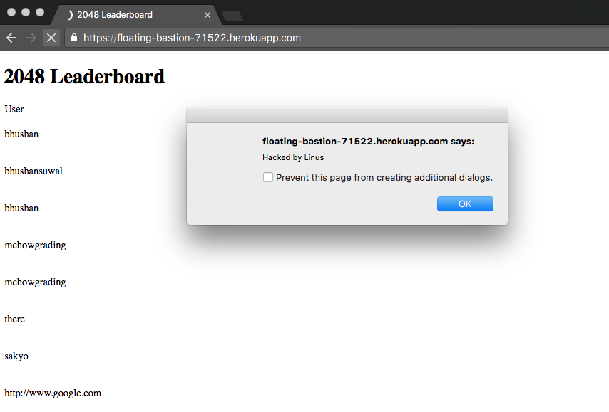
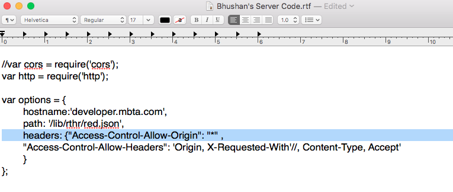
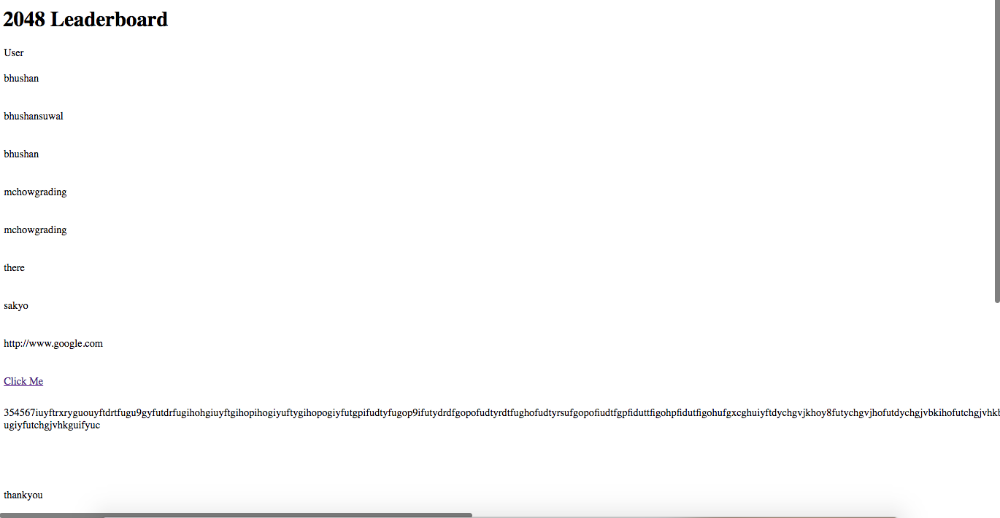
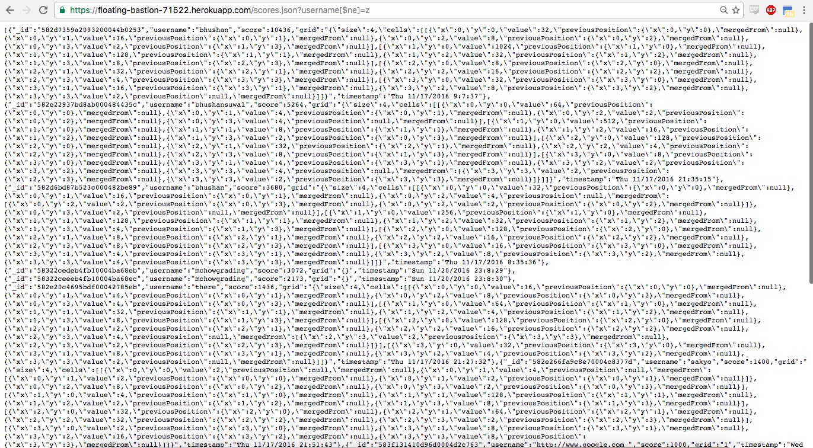

Assignment 4
Security Analysis of Bhushan Suwal's Assignment 3 by Linus Gordon
Introduction
I was given the task of finding security flaws in a small web application that stores and displays usernames and high scores in a MongoDB database.
Methodology
The first thing I did was black box testing. I used CURL to send a bunch of different usernames to the database. I attempted to inject scripts into the database. After that, I attempted to input an extremely large username into. I succeeded in both attempts.
The last thing I did was search through Bhushan's code to find any additional security flaws. Again, I succeeded in my attempt.
Abstract of Findings
Several security flaws were found in this application. The issues ranged from the ability to access sensitive information (which is very dangerous) to simply annoying the user by ruining the page's formatting.
Issues Found
-
- Location: GameManager.prototype.isGameTerminated function in gamemanager.js
- Severity: HIGH. Malicious code could be injected into the website. This code could do things such as change the HTML page, making the page useless. More importantly, the code could access personal/sensitive information.
- Description: When prompted to enter in my username, I instead inserted a simple script that alerts the user. Upon refreshing the page, my script ran, as seen in the picture below.
- Proof of vulnerability: Below is a picture showing an alert that pops up that I injected through a script when entering a username. 
- Resolution: Validate the username a user inputs before inserting it into the database. When validating, you could put a character limit so that an opening an closing script tag could not fit. You could also remove all special characters such as <, >, and \ to break the the script tags.
-
- Location: Server Code (picture of where exactly below)
- Severity: MEDIUM. This is a very bad practice as it allows anyone to send a request to the server. However, compared to XSS, I don't think it is as severe, especially since this database is not storing any sensitive information.
- Description: I found this by examining Bhushan's server code. Almost immediately I saw the line ' Access-Control-Allow-Origin": "*" ', which is the location of the issue.
- Proof of vulnerablity in the highlighted section of his code below.

- Resolution: Instead of using the wildcard, create a whitelist of sites that should be allowed to access the server.
-
- Location: app.get('/', function(request, response) function
- Severity: LOW. This has potential to annoy users as it makes it very difficult to read the high score table.
- Description: There is no limit to how long a username or score can be when creating the table to display the high score list. Using curl, I was able to input a username with a ton of characters. Then, when the highscores were displayed, the massive username was displayed in an extremely wide table column, ruining the format of the table and making it very difficult to read.
- Proof of vulnerablity: As you can see, the table is formatted horribly because of the extremely long username in the image below. 
- Resolution: Set a character limit when generating the table so that this cannot happen.
-
- Location: app.post('/submit.json', function (request, response) function
- Severity: MEDIUM. A user can input a username of any length, but MongoDB has a limit to how much data you can store in your database. A malicious user could give the table a username so incredibly long that it would fill the storage limit in the database so that it could no longer be used.
- Description: I looked through Bhushan's code and found that there was no limit to the length of a username. Theoretically, somebody could input a username of infinite length which would be too much data for the database to hold.
- Proof of vulnerablity: Since there is also no output character limit the photo for security flaw #3 also shows this. This is because in order to get such a long username, I had to input it into the username field and it did not limit it.
- Resolution: Set a character limit when creating the table so that this cannot happen.
-
- Location: app.get('/scores.json', function(request, response) function
- Severity: MEDIUM. I was able to see every single entry in the database. If the database was storing sensitive information, I could have seen that too.
- Description: I looked through Bhushan's code and found that he took the query string and never validated/sanitized it. So, I set the query string to '?username[$ne]=z'. This showed me every entry in the database where the username was not equal to 'z'.
- Proof of vulnerablity shown in the photo below. Please take note of the url and more specifically, the query string as mentioned above. As you can see, this query string gives me the entire database (with the exception of usernames equal to 'f') 
- Resolution: Remove special characters to avoid this type of injection
Conclusion
Overall, this application contained a number of security flaws. However, many of them could easily be solved by placing a character limit on what can be inserted/outputted from the database. I would suggest fixing the security flaws in order of severity. These changes could be done fairly quickly and would not be of great cost because I have already found many of the flaws.